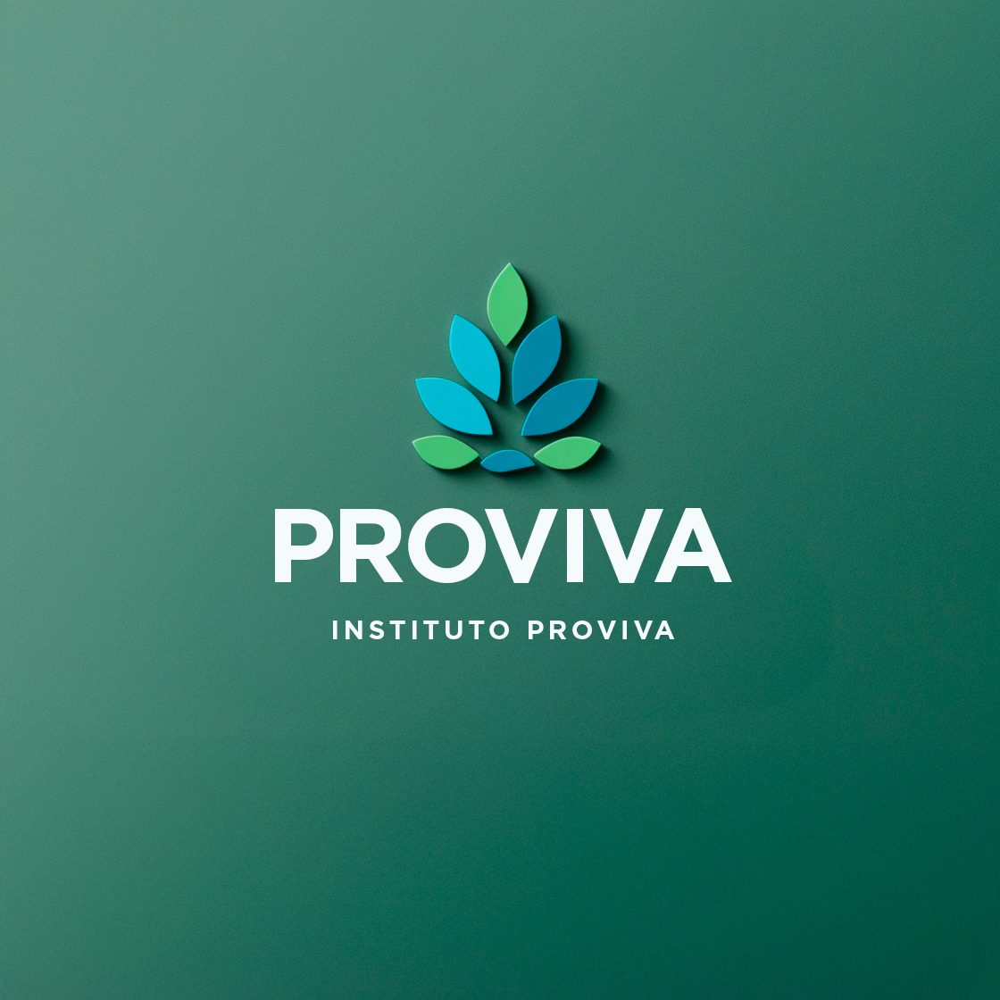

Exelência na administração hospitalar

Há 22 anos promovendo saúde de qualidade para as pessoas.
Fundado em 6 de janeiro de 2003, o Instituto ProViva de Educação, Cultura e Ação Social é uma entidade de direito privado sem fins lucrativos, certificada como entidade beneficente de assistência social na área da saúde, CNPJ: 05.481.950/0001-07. O Instituto ProViva mantém um atendimento de excelência na média e alta complexidade, obedecendo às diretrizes operacionais do Sistema Único de Saúde. O Instituto ProViva acumula a experiência na administração do Hospital Fernandes Távora (Fortaleza-CE), do Núcleo Hospitalar Parnaíba (Parnaíba-PI), da UPA - Camocim - Unidade de Pronto Atendimento (Camocim-CE), Hospital Municipal de São Benedito - Dr. Bueno Banhos (São Benedito-CE), UPA - Pecém - Unidade de Pronto Atendimento (São Gonçalo do Amarante-CE), Hospital Geral Luiza Alcântara e Silva (São Gonçalo do Amarante-CE), Hospital Municipal de Varjota - CE, Hospital Maternidade Maria Suelly Nogueira Pinheiro - Solonópole-CE, UPA - São Benedito - Unidade de Pronto Atendimento (São Benedito-CE), Hospital Municipal Maria Wanderlene Negreiros de Queiroz (Ibiapina - CE), UPA - Jaguaribe - Unidade de Pronto Atendimento Dr. Raijoan Sérgio Ramos Gomes (Jaguaribe-CE) e Hospital Municipal de Paraipaba - Hospital Otacílio Barbosa dos Santos (Paraipaba-CE).

Unidades